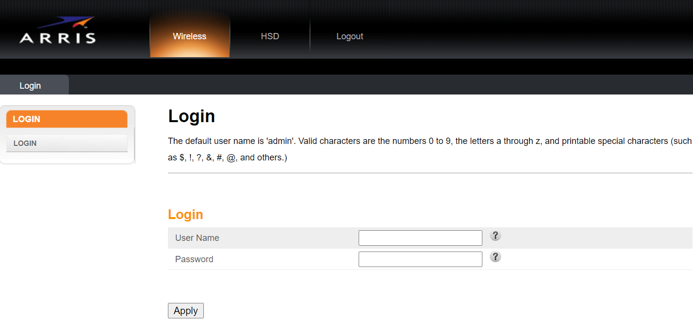
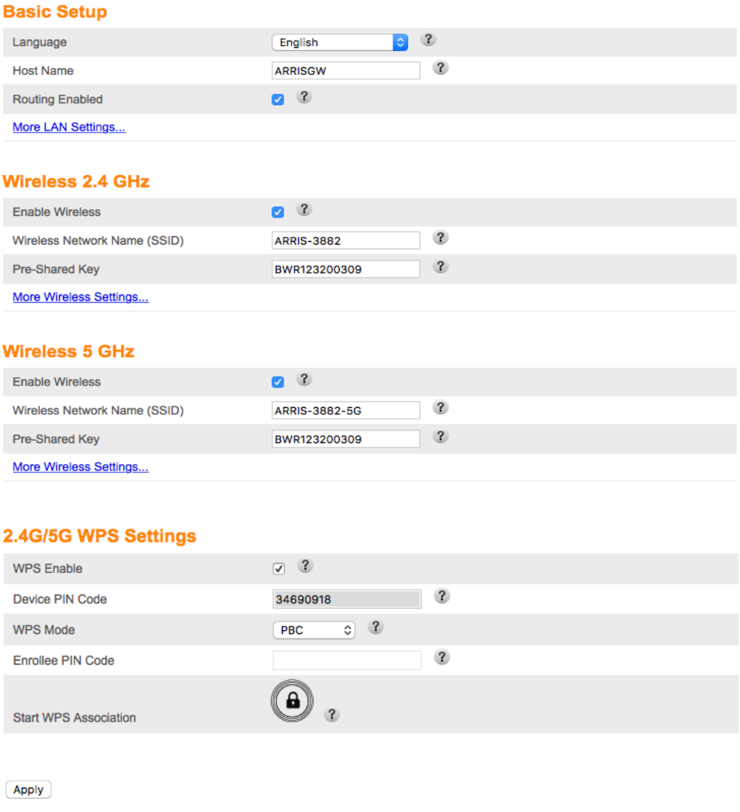
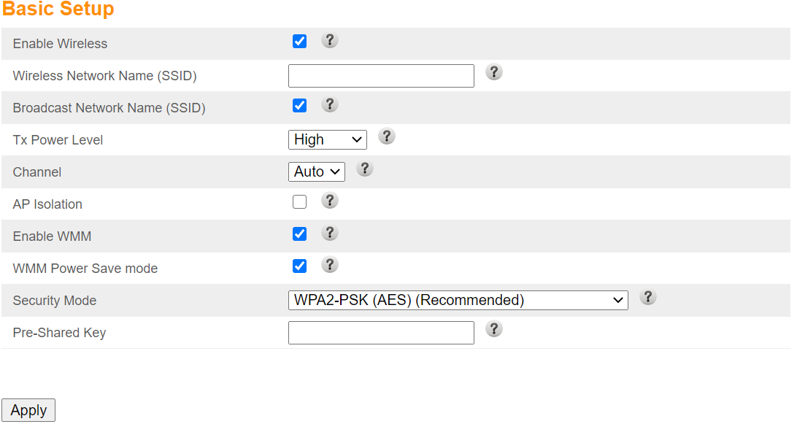
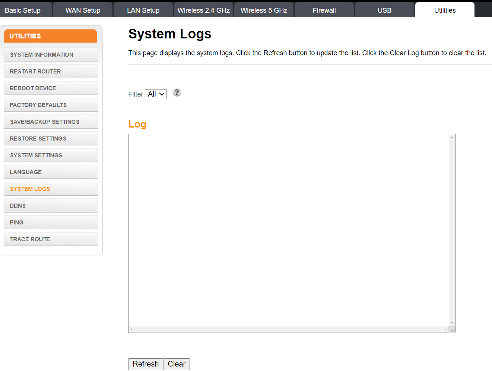
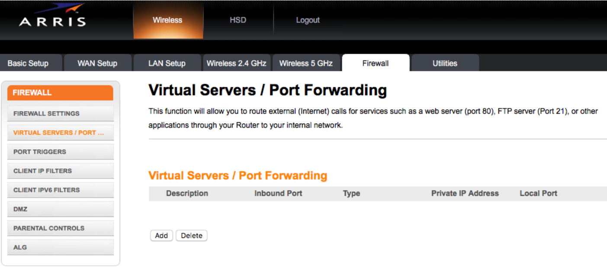
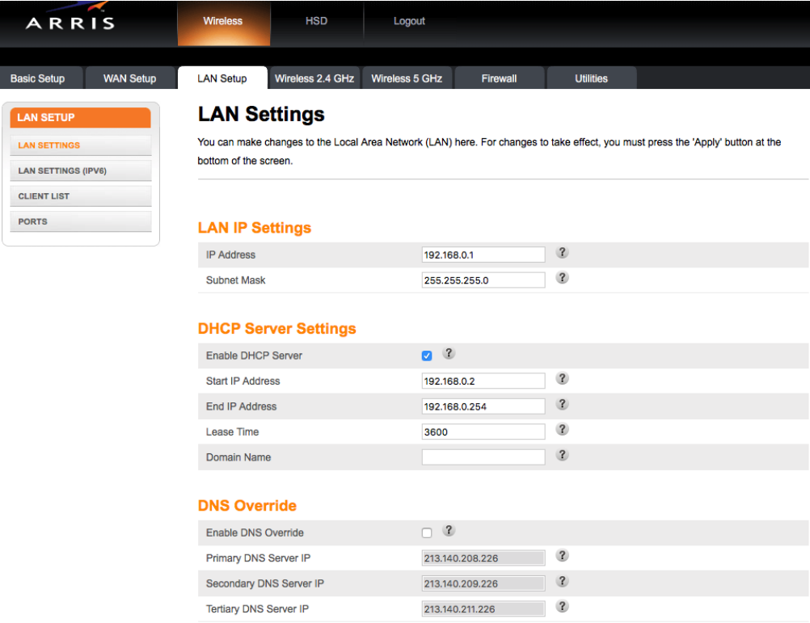

Arris 1652: Specifications / Interfaces / Guides
Front Panel Indicators (Upwards to Downwards):
- Power: Indicates whether AC power is available to the unit.
- US / DS:Indicates upstream / downstream connectivity.
- Online: Indicates Internet data transmission status.
- 2.4 GHz: Indicates the status of the 2.4 GHz wireless LAN.
- 5 GHz: Indicates the status of the 5 GHz wireless LAN.
- Tel 1: Indicates the status of telephone line 1.
- Tel 2: Indicates the status of telephone line 2.
- WPS Button / LED:
- Begins associating the telephony gateway with a wireless device.
- LED indicates that WPS (Wireless Protected Setup) is active.
- USB: Disabled
Rear Panel Indicators (Upwards to Downwards):
- Reset Button: Factory resets the device if pressed with a non-metalic object.
- telephone 1 (Grey Port): Connector for the first phone line.
- telephone 2 (Grey Port): Connector for the second phone line.
- Ethernet 1-4 (Yellow Ports): Connectors for ethernet cables.
- Coax Cable: Connector for the coax cable.
- Power: Connector for the power cable.
Gateway - Landing Page:
You can access this page by typing 192.168.0.1 in your browser's navigation bar.

Default Username: admin (Lowercase Letters)
Default Password: password (Lowercase Letters)

Default Username: admin (Lowercase Letters)
Default Password: password (Lowercase Letters)
System Basic Setup:
From this page you can:
1. Change the Gateway's default language.
2. Change the Wireless 2.4 GHz SSID & Preshared Key (WiFi Name / Password).
3. Change the Wireless 5 GHz SSID & Preshared Key (WiFi Name / Password).
3. Access additional settings for the 2.4 GHz & 5 GHz WiFi.
4. Enable / Disable the WPS Service & the associated settings.

1. Change the Gateway's default language.
2. Change the Wireless 2.4 GHz SSID & Preshared Key (WiFi Name / Password).
3. Change the Wireless 5 GHz SSID & Preshared Key (WiFi Name / Password).
3. Access additional settings for the 2.4 GHz & 5 GHz WiFi.
4. Enable / Disable the WPS Service & the associated settings.
More wireless settings interface:
You can access this page by clicking on the more wireless settings option under the 2.4 GHz & 5 GHz sections of the Page.
From this page you can:
1. Disable the WiFi completely.
2. Change the SSID (WiFi Name).
3. Change the Preshared Key (WiFi Password).
4. Change Broadcasting Channel.
5. Change the WiFi's security Mode.

From this page you can:
1. Disable the WiFi completely.
2. Change the SSID (WiFi Name).
3. Change the Preshared Key (WiFi Password).
4. Change Broadcasting Channel.
5. Change the WiFi's security Mode.


